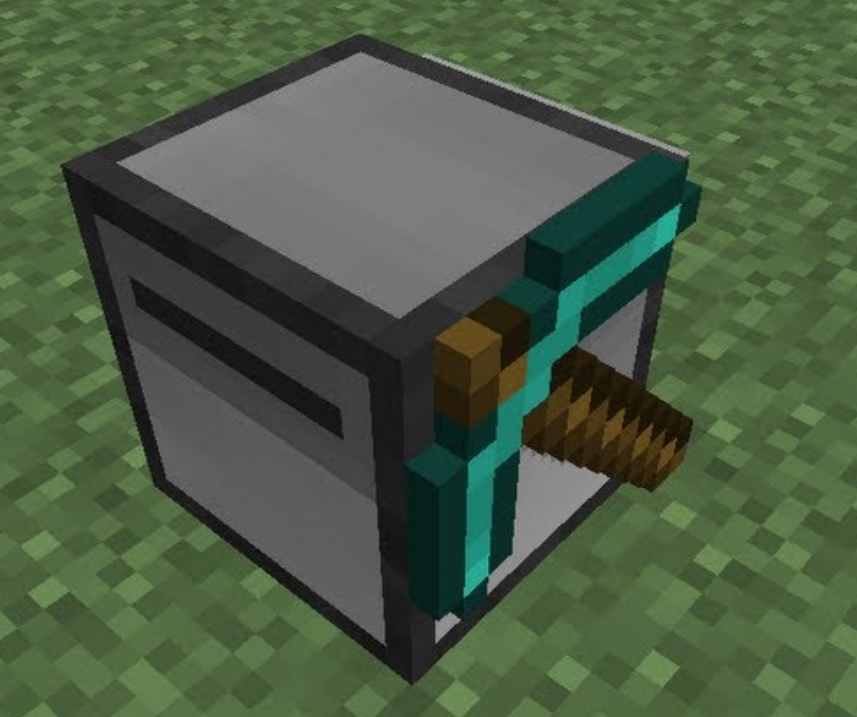
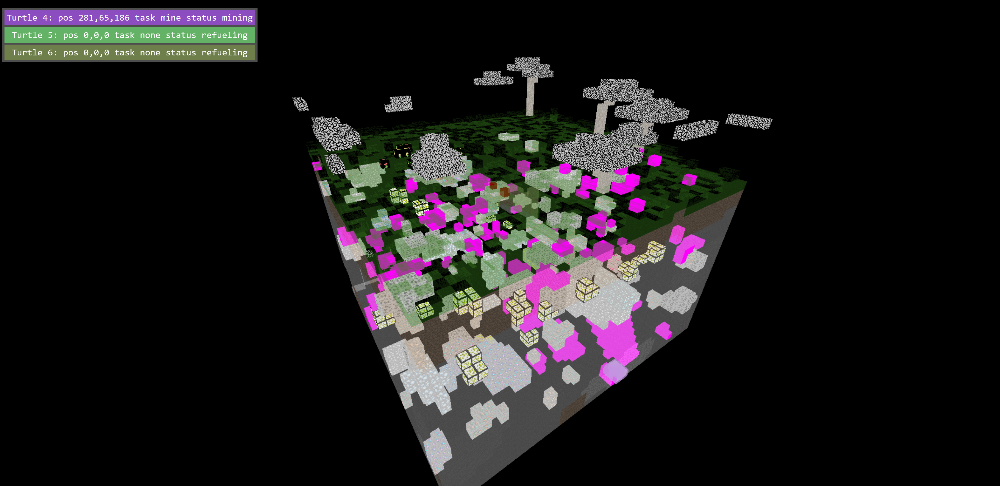
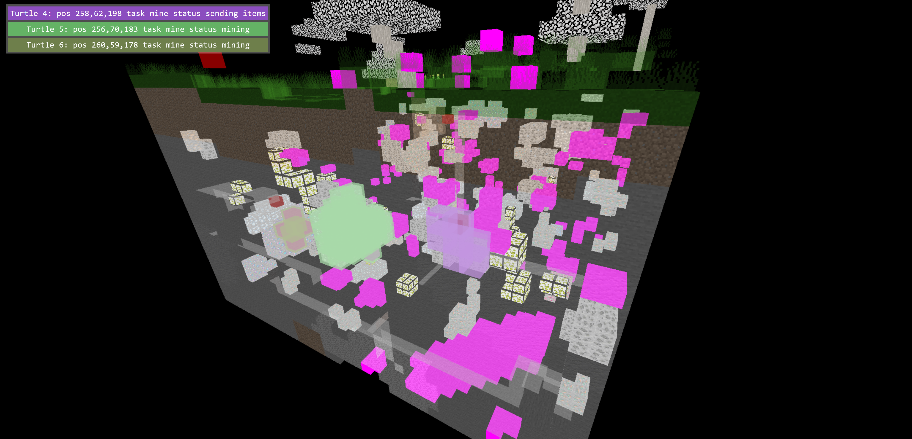
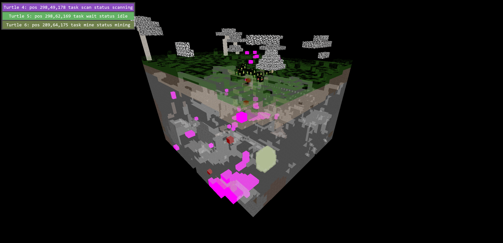
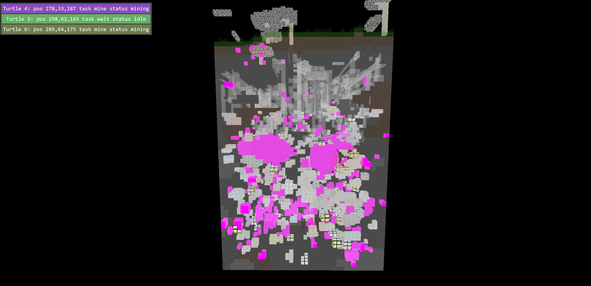
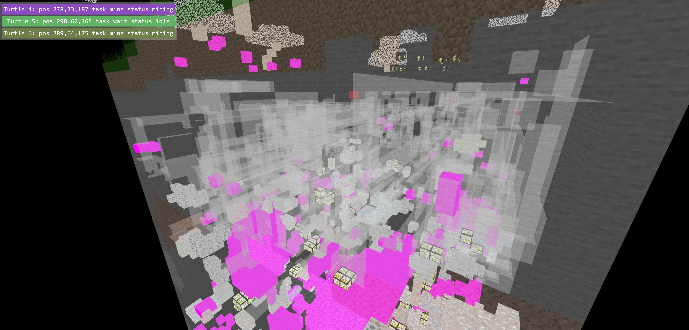

As a fun project, I wanted to explore the idea of creating an automatic mining system in Modded Minecraft. With the ComputerCraft mod you can
use Lua scripting to control a small robot called a Turtle. The turtle can perform various actions like moving around, mining blocks,
transfering items and scanning its environment. Therefore by coordinating a large swarm of these turtles, it is possible to mine areas of the
world automatically at a large scale.
To accomplish this, I first created a Flask webserver to act as the central controller for each turtle. I exposed some basic get and post
commands to allow the turtles to fetch their tasks and deliver the results back. On top of this server I created a 3D frontend using Three.js to
display the controller's current understanding of the world and the statuses of each turtle in its control. Lastly I created the turtle's lua
script which polls the server for tasks and performs them, reporting back its results.
The script for the turtle had some additional requirements like:
These additional actions pause the current task and report the status back to the server to give the frontend useful feedback.
Below are the screenshots of the frontend website with some additional contextual information alongside:





